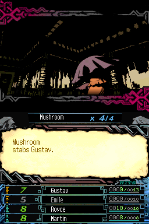
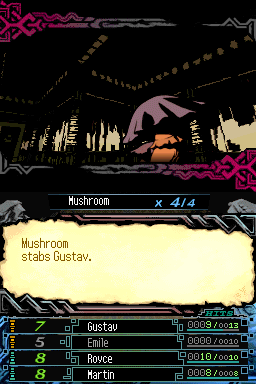

The Dark Spire

Not Complete on 2023-01-02
2 / 5
Release Date: Apr 14, 2009
Meta Score: 69
Screenshots
 

Notes
This was one of the low scorers that I was interested to pull in for the challenge.
Turns out, it's not very good. Going for an Etrian Odyssey style 1st person dungeon crawler, with a bit more of a classic RPG style. The visual style is interesting. But it's not really very fun.